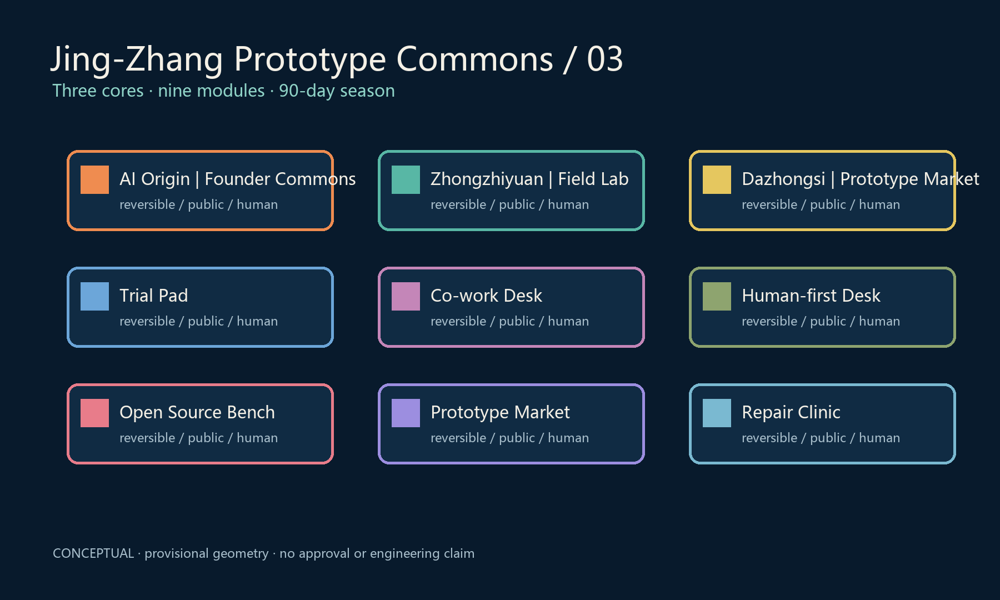

Jing-Zhang Prototype Commons
Three cores, nine modules, a distributed civic prototype network
Founder Commons
Reversible Field Lab
Public Prototype Market
总览地图 · 三层范围 · 重点区域 · 用地分区 · 交通慢行 · 蓝绿公共空间 · 建筑 · 更新项目 · AI 场景 · 核心指标 · 任务覆盖 · 自检状态 · 来源 · 假设
11,412,825 m² provisional site
green ratio
public space ratio

Conceptual proposal; provisional geometry only.